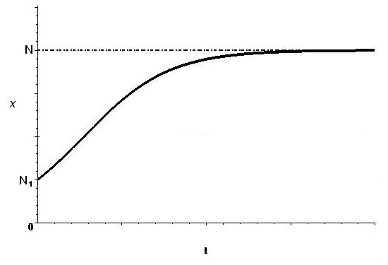

Уравнение Бернулли относится к типу уравнений, которые приводятся к линейному неоднородному ОДУ.
Общий вид этого уравнения \begin{equation}\label{15} y'+a(x)y=b(x)y^n, \tag{15} \end{equation}
где \(n\) может быть любым вещественным числом. Функции \(a(x) \) и \(b(x) \) предполагаются непрерывными в промежутке \((\alpha, \beta)\).
Исключим случаи \(n=1\) и \(n=0\), так как при этих значениях \(n\) уравнение (\ref{15}) , превращается в однородное или неоднородное линейное уравнение.
Разделим обе части уравнения (\ref{15}) на \(y^n\), полагая \(y\neq 0\): \[\frac{y'}{y^n}+\frac{a(x)}{y^{n-1}}=b(x).\]
Вводя новую искомую функцию \(z=y^{1-n}\), получим линейное уравнение \(\frac{z'}{1-n}+a(x)z=b(x)\).
Решим уравнение \(y'-\frac{4}{x}y=x\sqrt{y}.\) Это уравнение Бернулли с \(n=\frac12\). Делим обе части уравнения на \( \sqrt{y}\) в предположении \(y\ne 0\): \[\frac{y'}{\sqrt{y}}-\frac{4}{x}\sqrt{y}=x.\]
Вводим новую переменную \(z=\sqrt{y}\), \( \frac{dz}{dx}=\frac{1}{2\sqrt{y}}\cdot\frac{dy}{dx}\), подставляем в уравнение \[z'-\frac{2}{x}z=\frac{x}{2}.\]
Получили линейное неоднородное уравнение относительно функции \(z\), решим соответствующее однородное: \[\frac{dz}{dx}=\frac{2}{x}z, \frac{dz}{z}=\frac{2dx}{x}, \ln|z|=2\ln|x|+\ln C, z=Cx^2. \]
Варьируем постоянную \(C=C(x)\): \[C'x^2+2xC-\frac{2}{x}\cdot Cx^2=\frac{x}{2}, \hspace{0.5cm} \text{или} \hspace{0.5cm} C'=\frac{1}{2x}, C=\frac12\ln|x|+D.\]
Следовательно, \[z=x^2\left(\frac12\ln|x|+D\right).\]
Возвращаемся к переменной \(y=x^4\left(\frac12\ln|x|+D\right)^2\). Кроме того, есть еще решение \(y=0\) \({\triangle}\).
Заметим, что рассмотренная ранее модель эффективности рекламы (см. пример (11) первой лекции) описывается уравнением Бернулли: \[\frac{dx}{dt}=kx(N-x), \hspace{0.5cm} \text{или}\ \hspace{0.5cm} \frac{dx}{dt}-kN\,x=-k\,x^2.\]
Если в начальный момент времени о новом товаре знало \( N_1 \) человек, т.е. \(x(0)=N_1\), то решение имеет вид (11) \begin{equation}\label{16} x=\frac{N}{1+\left(\frac{N}{N_1}-1\right)e^{-kNt}} \tag{16} \end{equation}
Второе слагаемое знаменателя стремится к нулю при \(t\rightarrow \infty\), поэтому \(x\rightarrow N\). График функции (\ref{16}) \(-\) логистическая кривая.

Рис. Логистическая кривая